Brand & Communications Guide
Who We Are
Badger Supports is a peer-led mental health organization for UW–Madison students, offering support groups, workshops, and community events. Its communications make that support easy to find and act on.
Values
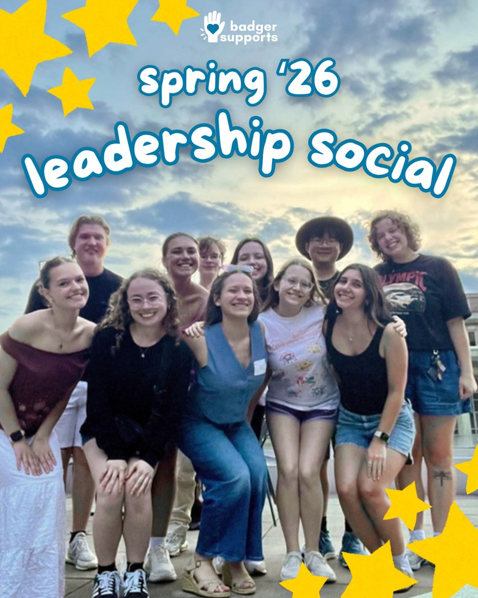
Audience
UW–Madison students. They scroll fast and see a lot, so keep it warm, plain, and quick.
Pillars
The Mark
The logo has two locked parts: the mark (the hand with the heart and lines) and the wordmark. They are always used together and scaled as one unit.
Avoid recoloring part of the logo, stretching, rotating, or adding a shadow.
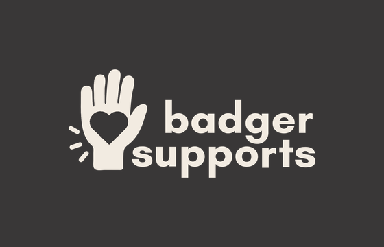
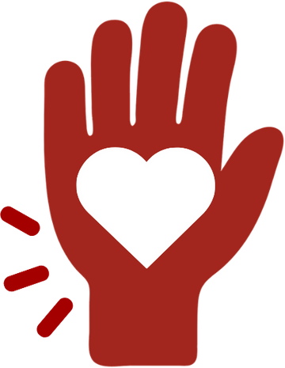
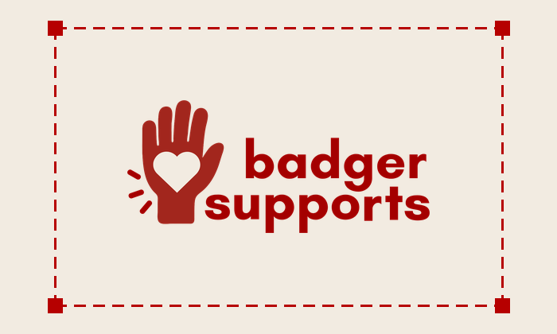
The hand on its own
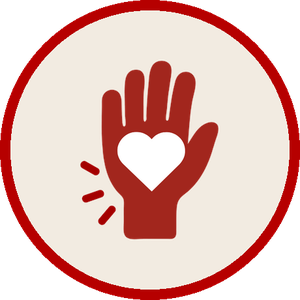
When there isn't room for the full logo, use the mark — the hand and heart — on its own.
Use it for: profile pictures and avatars, app icons and favicons, stickers and buttons, watermarks, and any space too small or too square for the full logo (below 1.25 in / 120 px). Keep it one color on a clear background, at 32 px or larger.
Hand — real uses
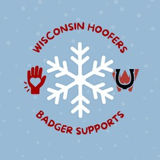
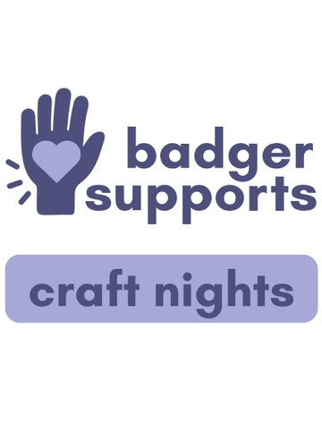
Full logo — real uses
Use the full logo when there's room — banners, headers, flyers, and slides.
Logo misuse
Scale it to any size; never alter it. Each example below is incorrect.
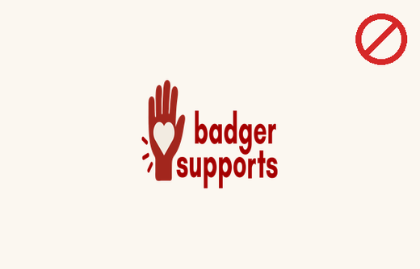
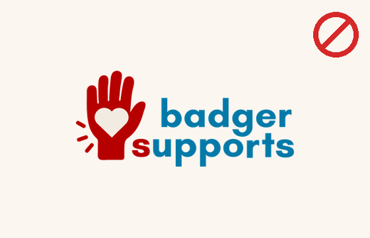
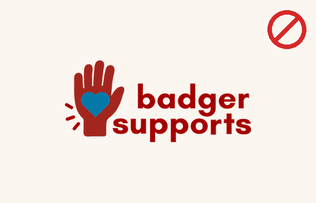
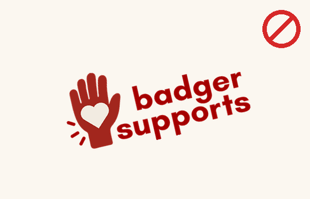
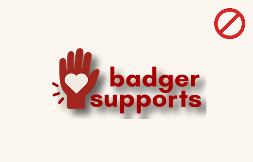
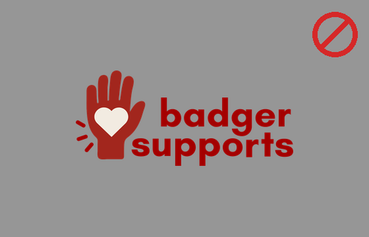
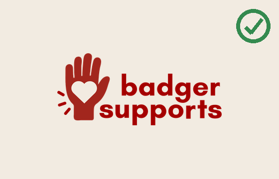
Correct
One color across the whole logo, the heart matching its background, proportions unchanged. Editable logo files are in the Brand Kit (see Color).
Palette & Brand Kit
The palette is a primary red, a cream ground, charcoal text, and a set of program colors. Each program and topic is assigned a color so material is identifiable at a glance.
The Brand Kit
Every color, font, and logo is saved in the Badger Supports Brand Kit in Canva. Colors are copied directly from there, not typed from memory.
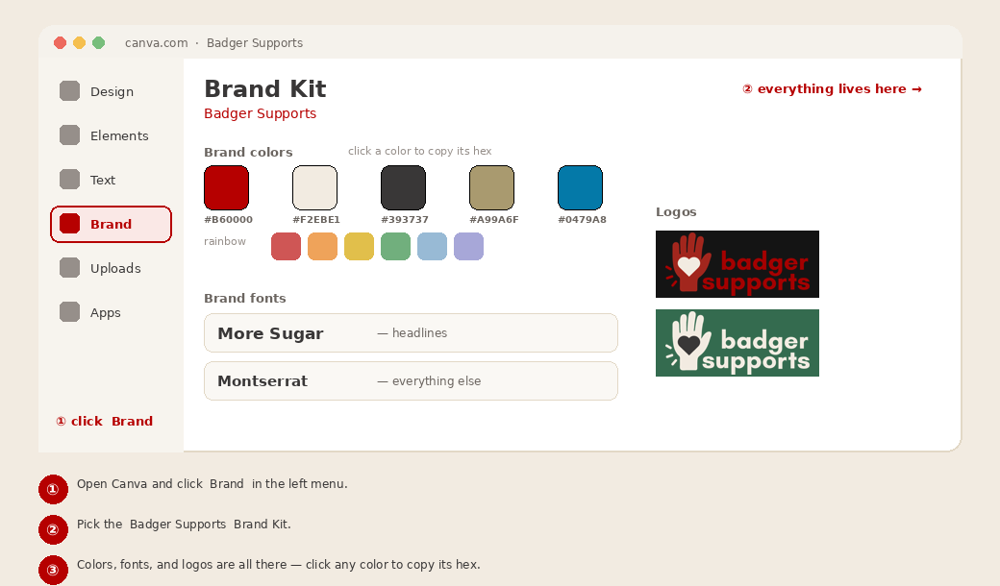
Primary
Accents
Tap any color swatch to copy its hex — no typing needed.
Extended palette (light & dark rainbow)
Beyond the three programs, topics such as resources, alumni, and events use a color from the rainbow. Every color has a light and a dark version.
Textured backgrounds
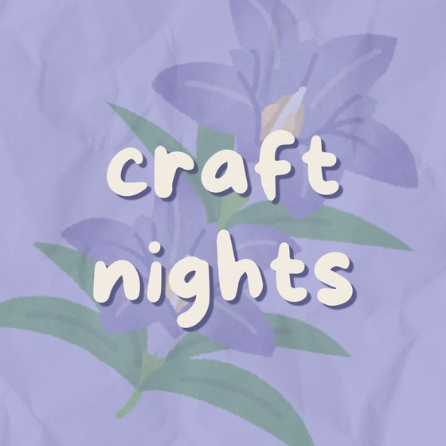
Backgrounds are never a flat color fill. Use a layered paper or watercolor texture in the topic color, usually with a single faded @irasutoya illustration behind the type.
In Canva: place the color, add a "paper texture" or "grain" element from Elements over it at low opacity, then one faded illustration.
Avoid a flat color fill. Backgrounds always get a paper texture in the topic color.
Program & topic colors
Left to right: the topic, its light and dark hex, and a real post that uses it.
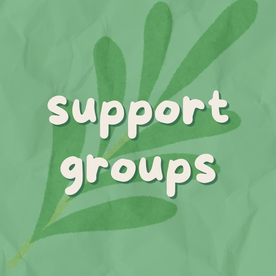
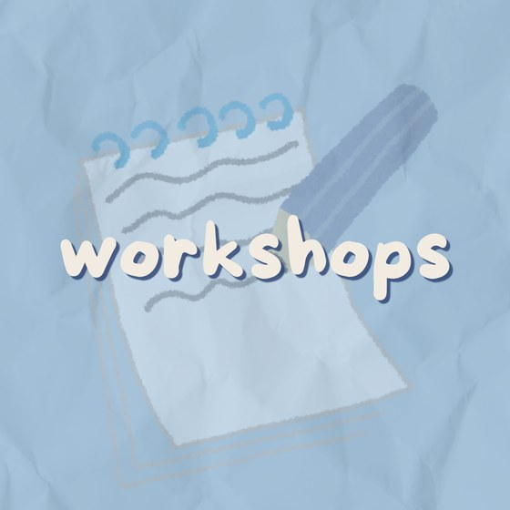
Other topics use a rainbow color the same way:
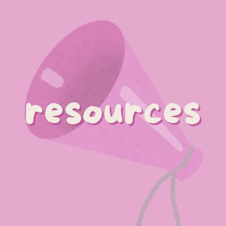
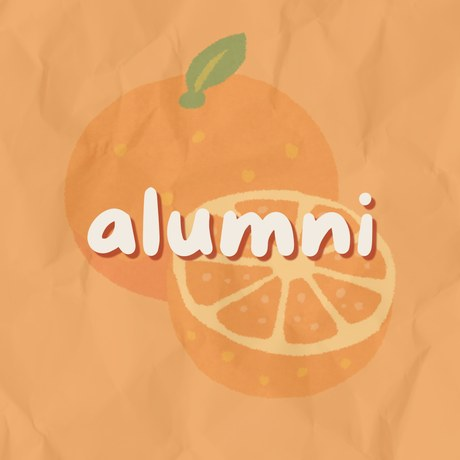
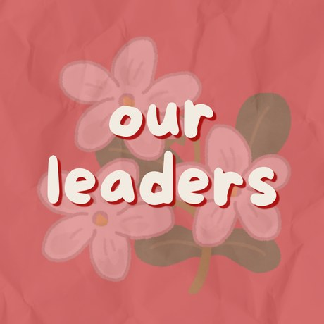
Choosing a shade and headline color
- Use the light shade for backgrounds and fills, the dark shade for text and small details.
- Set headline text in cream on a colored, textured, or photo background, and in red on a plain cream background.
cream text on a color
charcoal on cream
yellow on cream
cream on a light color
Two Typefaces
The type system uses two typefaces: More Sugar for headlines and Montserrat for all other text. Avoid a third typeface.
More Sugar — headlines
The most prominent line on the piece. Lowercase, with a soft shadow. More Sugar is a Canva font and is set in Canva; there is no web version.
Montserrat — everything else
Body text, captions, buttons, and longer copy. Regular for reading, Bold for emphasis.
Avoid going below 12 pt — even fine print, disclaimers, and captions. Smaller type is hard to read on a phone or in print.
Type sizes — by where it goes
Instagram / screen
Headline · More Sugar · 70 pt+
Body · Montserrat · 30 pt+
measured in pt
Print & flyer
Headline · More Sugar · ½–¾ in (≈36–54 pt)
Body · Montserrat · ¼ in (16 pt+)
measured in inches
Newsletter & email
Title 35 pt · headings 17 pt
Body 15 pt · Montserrat
Google Docs
Start a canvas in Canva → Create a design → Custom size — pick px for a screen or in for print. The 12 pt floor applies everywhere.
Sizes to scale
Shown to relative scale — a headline stands several times taller than body text.
Writing body text
- One idea per paragraph — one to three short sentences.
- Open with the point; the first line should stand on its own.
- Bold or color one or two words at most: a date, a name, the action.
Layout & Spacing
Layout follows three principles in every format: lead with the essential information, establish a clear visual order, and allow adequate spacing.
Lead with the essentials
The most frequently missed step. These four items should be the first a reader sees, in this order, largest to smallest.
- Title — what it is. The largest element on the page.
- Date & time — when.
- Place — where (a room, a spot on campus, a link).
- Host & next step — who, plus a short link or QR. The smallest.
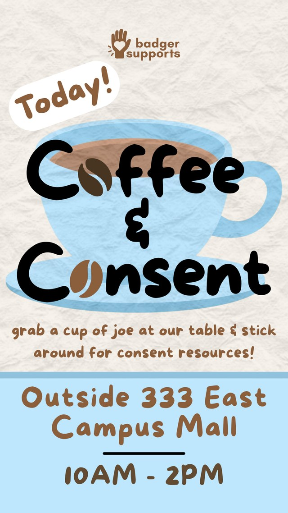
Then keep everything inside the safe margins (below), and give each piece a single focal point.
Instagram story safe zone
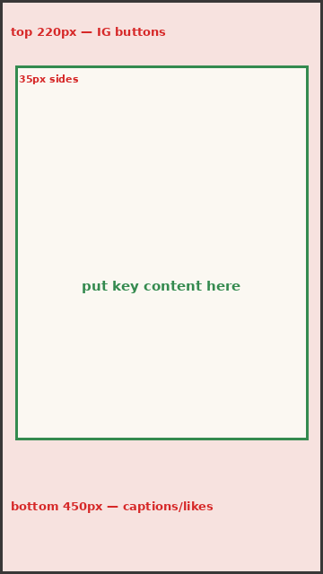
Keep text and logos out of the top ~220 px and bottom ~450 px, where Instagram's buttons and captions sit.
Print margins
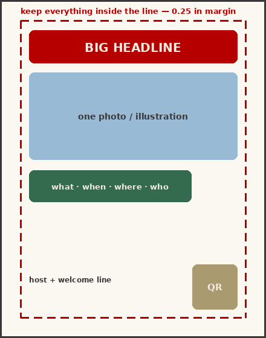
Keep all text, logos, and QR codes at least 0.25 in from the edge so nothing is trimmed. Export sharp: Canva → Share → Download → PDF Print.
Most of our reach is on stories — always check the safe zones before you post.
Rounded corners & the red frame
Round the corners (~20 pt) on photos and boxes — soft, never sharp-edged. A thin red border (~10 pt) is a common accent, but it isn't required on every piece; plenty of our work skips it.
The red border is optional — reach for it to lift a photo off the background.
Reading order
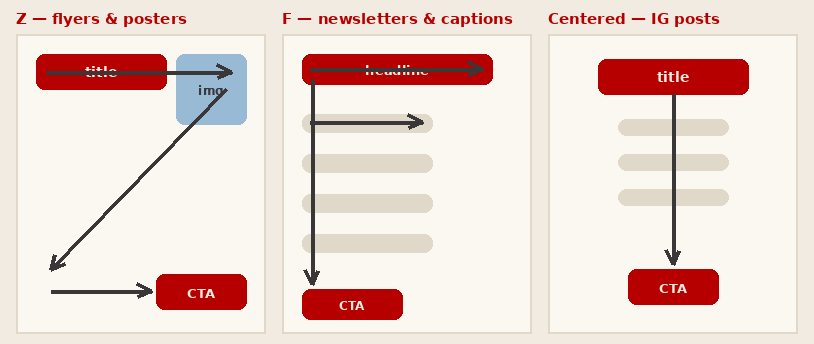
Z for flyers · F for newsletters and captions · centered for Instagram.
Spacing — too tight vs. just right
Keep the same gap between photos, text blocks, and icons throughout. Even space groups related items and guides the eye; crowding reads as noise.
More spacing to mind
- Line spacing: give lines room — about 1.2–1.5× the text size. Cramped lines are hard to read.
- Group by proximity: keep related items close (a date under its title) and push unrelated ones apart.
- Padding: keep text and logos off the edges of a panel, with an even inset all around.
- Align things: line elements up to a shared edge or center — stray alignment looks messy.
- Around the focal point: give the headline empty space so it stands out.
- Between icons: even gaps at the same size, so a row of details feels evenly spaced.
Illustration, Mascot & Photos
Badger Supports is photo-first: real student photos lead most pieces, with @irasutoya illustrations and the Barry mascot in support. Keep one style per piece.
Lead with a strong, real student photo, then layer the headline and any frame on top.
Illustration
Search @irasutoya in Canva Elements → open the ⋯ menu → "view more" → search your subject. Keep one illustration style per piece — examples below.
Photography
Real students, bright and sharp, with rounded corners; add a red border when a photo needs lifting. Get consent before posting anyone's photo.
@irasutoya illustrations we've used
Search @irasutoya in Canva Elements → ⋯ → "view more" → your subject. One illustration style per piece.
File formats
- Graphics & logos: SVG or PNG — they stay sharp at any size.
- Photos: JPG, at 300 dpi for anything printed.
- Pull the logo from the Brand Kit; never screenshot it.
Our Voice
The voice is warm, plain, and peer-to-peer. Messages lead with the reader's benefit and stay brief.
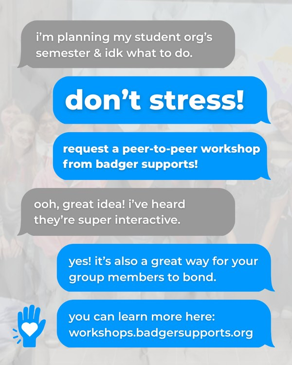
Voice in practice
"don't stress! request a peer-to-peer workshop from badger supports!"
"grab a cup of joe at our table & stick around for consent resources!"
"make a custom button & get 15% off your drink!"
"Badger Supports cordially invites you to utilize our services."
"We offer comprehensive peer-to-peer educational programming."
Sensitive & supportive language
- Use person-first, non-stigmatizing wording.
- Don't promise outcomes or give clinical advice — point people to support.
- On any hard topic, include a supportive next step.
On a post about a hard topic, point to help: UHS 608-265-5600, the 988 Suicide & Crisis Lifeline, or text HOME to 741741.
Message structure
- Hook — a shared feeling or a question.
- Info — what it is and why it helps, in one line.
- Next step — one action and a short link.
Accessibility
Material is designed to be readable and usable by everyone. Accessibility also broadens the audience a message reaches.
Contrast
Accessible vs not
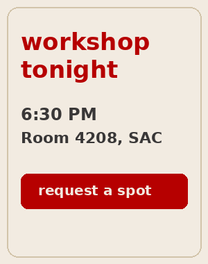
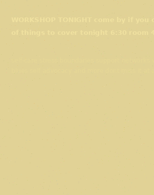
Digital
- Alt text on every image — describe what matters.
- Contrast at least 4.5:1; don't rely on color alone.
- Descriptive links — never "click here."
- Caption videos; use real text, not text baked into an image.
- Body 16 pt+ in print, 30 pt+ on a graphic; tap targets 44 px+.
Physical & events
- Add an accommodations line with a contact and lead time.
- Offer large-print or alternate formats on request.
- Caption or interpret on request.
- Keep printed signage high-contrast and large — readable from a distance.
On event materials: "To request a disability-related accommodation, contact accessibility@badgersupports.org. To guarantee arrangements, please request at least 3 days before the event." On Instagram, put this in the caption — not on the graphic.
Based on UW–Madison Digital Accessibility guidance.
Working with Partners
Badger Supports frequently partners with other organizations, including University Health Services, the Tenant Resource Center, and EBNS.
Equal size · even spacing · name both plainly
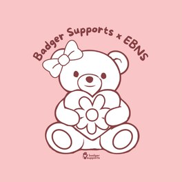
Line the logos up at a similar visual weight with even spacing, as shown above. Name both organizations plainly — "Badger Supports, with the Tenant Resource Center." If a grant funds the piece, add the ASM disclaimer (see Compliance).
Funding, Links & Naming
ASM grants
Print paid for with ASM grant funds carries the ASM logo and disclaimer:
"Funded in part by an Associated Students of Madison viewpoint neutral grant. Contact request@asm.wisc.edu for accommodation information."
Ready graphic: the ASM Grant Funding Acknowledgment design in Canva; or download the ASM logo from asm.wisc.edu. Recolor with duotone and crop to the logo as needed.
Links & QR
- Short links only: *.badgersupports.org or a forms.gle link.
- A QR code always shows the link printed beneath it.
Naming files
Folder: [Event or Title] [DATE]
File: [Type] – [Short Description] – [DATE].[ext]
e.g. Flyer – Community Night – 2026-10-05.png
Formats & Real Examples
Each format applies the guidelines above. The entries below give the dimensions, content order, and a real example for the pieces produced most often. Screen dimensions are in pixels; print dimensions in inches.
Print vs digital — the two types of design
Digital — Instagram, stories, slides. Sized in pixels (e.g. 1080×1350). Bright screen color, lives in the feed; type in pt, body 30 pt+.

Print — flyers, signs, stickers. Sized in inches (e.g. 8.5×11) at 300 dpi with 0.25 in margins; type in pt, body 16 pt+.
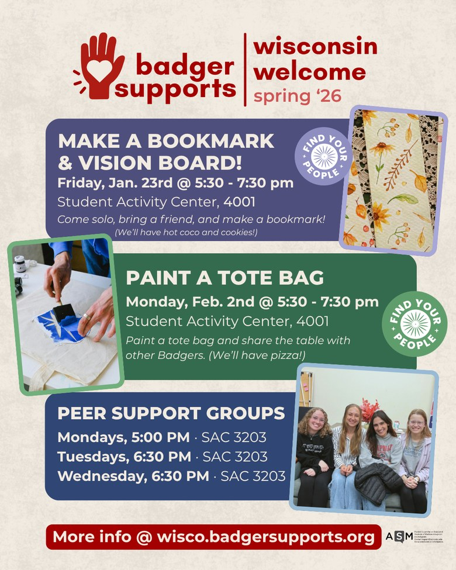
Instagram post 1080×1350 px
One focal point; a short headline on the image (More Sugar, 70 pt+); details in the caption, key point first. Carousel: slide 1 hooks, one point per slide, the last slide is the request.
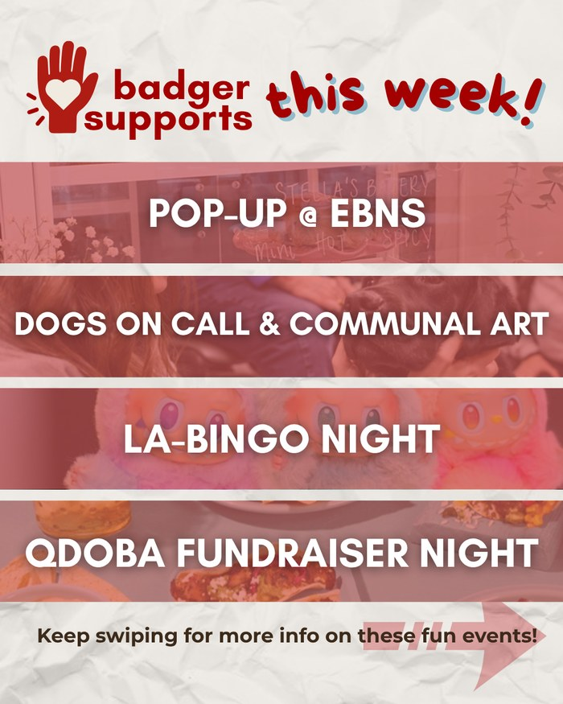
Story / "this week" 1080×1920 px
Most reach is on stories. One idea per slide; time and place in a rounded panel; observe the safe zones. Always end with a call to action — "follow for more" or a link for details. Help people remember: repeat the key details and post again the day of the event.
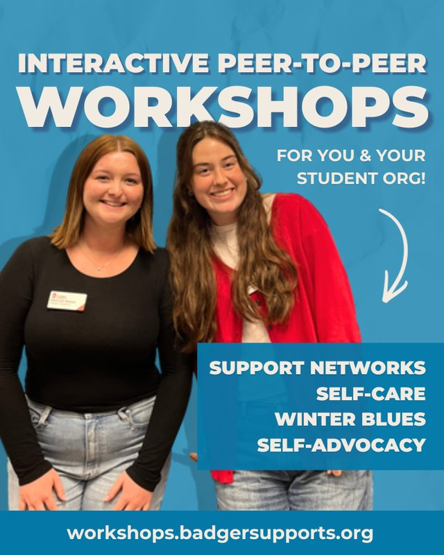
Workshop / event promo
A clear headline, a warm photo or illustration, and the list of what's covered. End on the request link.
Recap post
A lead slide with the event name over a group photo and the star frame, then the photos. Best right after an event.
Flyer & print 8.5×11 in
Essentials first, a large headline at the top, one visual, and a QR at the lower right — everything inside a 0.25 in margin. Quarter-sheets are 3.75×5 in.
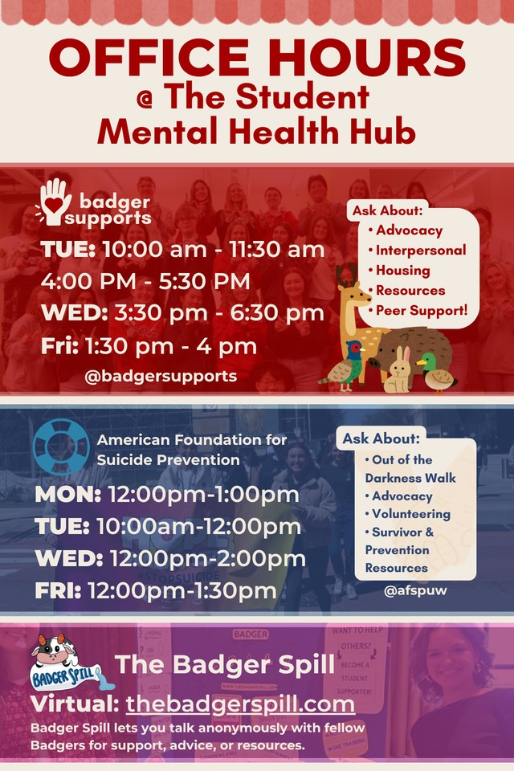
Campus sign
Readable from several feet away: one large title, a simple schedule or arrow, and a short link. Same colors and rounding as everything else.
Event post
A dated event with a photo and the essentials — headline, date and time, place. Text sits in a rounded panel beside or over the photo.
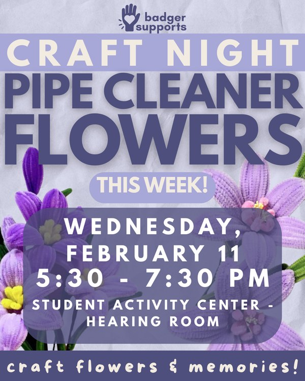
Craft night post
Craft nights use the community purple, a photo of the make, and the date. Warm and casual.
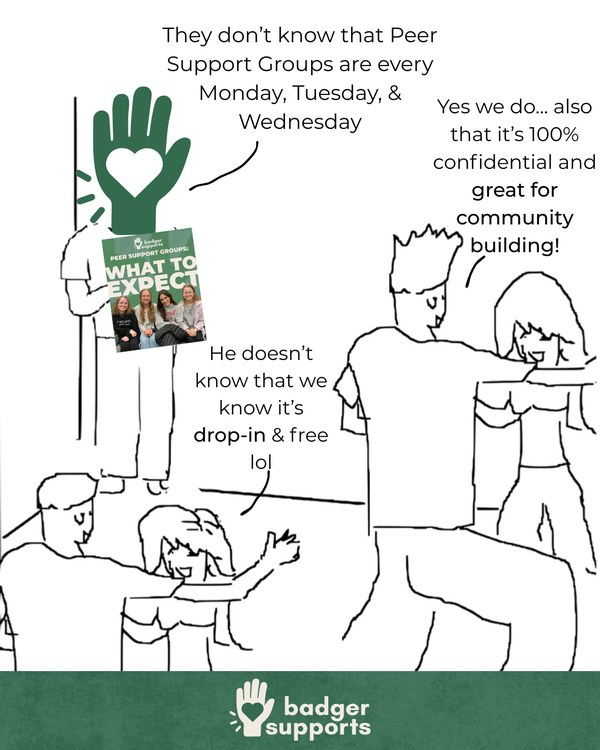
Meme / relatable
A lighter, illustration-led post that still lands the point. Keep the voice warm and on-brand.
Merch & collateral
The same system carries onto print goods and merch. Real Badger Supports pieces:
Email header
A slim banner with the reversed logo on a program color, sized for the top of an email.
Business card 3.5 × 2 in
Name, role, and a short link on the brand background, with generous clear space.
Tote & apparel
The logo on a plain ground with the topic name below — one color, plenty of clear space.
Stickers & buttons
The mark works well small and round; co-branded pieces name both partners.
Newsletter (Google Docs)
- Branded banner with a specific title + month/year.
- A warm two-to-three-sentence intro.
- An event spotlight, then standing items (craft nights, group schedule, workshops, resources).
- One column; title 35 pt / headings 17 pt / body 15 pt.
Email & class announcements
- A short, specific subject line.
- One line of context, then two to four sentences.
- One next step and a short link.
- Class announcement: a 30-second spoken pitch + a 16:9 slide.
Design Moves
Recurring moves that give Badger Supports material its look. Each one applies the guidelines from the earlier sections.
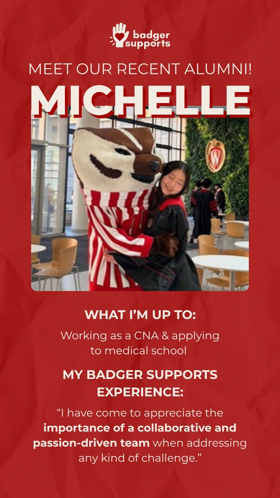
Text on photos
Put a color block, gradient, or slight dark overlay behind the words so they stay readable — as in the alumni spotlights. Never set plain text straight on a busy photo.
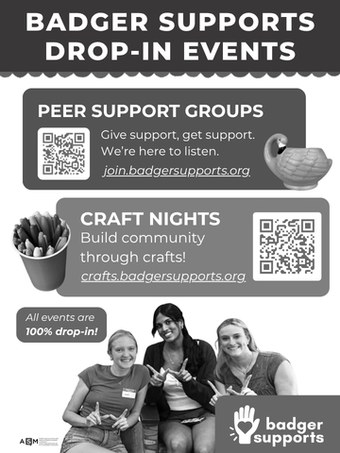
Black & white
Some pieces go monochrome using tones of gray. Keep one accent — usually red — for the part that matters most.
Organizing a lot of information
For a week of events, group items into equal rounded panels — one per item, in a clear order. Avoid crowding everything into one block.
Color overlay on photos
Lay a translucent program color (about 30–50% opacity) over a photo to tie it to the palette and lift text off a busy image.
Cut-out images
Cut-out (transparent-background) elements layer cleanly. Order them by depth — larger behind, smaller in front — and let one overlap the frame.
Give it room
Leave breathing room. Empty space is part of the design; a crowded piece reads as noise.
Icons
Use simple, consistent line icons in one style to label details — date, place, link. Not clip-art.
Text background effect
Canva → Effects → Background puts a rounded color pad behind a line of text — good for a date or a label on a photo.
QR codes
Make QR codes in Canva, not an outside site. Color them to match the flyer or a color that pops, and always print the link underneath.
Definitions
Definitions for the terms used in this guide.
- pt (point)
- The size unit for type, in Canva and print. 72 pt ≈ one inch tall. The minimum is 12 pt.
- px (pixel)
- The size unit for screens; Instagram canvas sizes are given in px.
- in (inch)
- The size unit for printed pages, such as an 8.5 × 11 in flyer.
- dpi
- Dots per inch — print sharpness. Use 300 dpi for anything printed.
- hex
- The color code used in Canva — a "#" and six characters, such as #B60000. Copy it from the Brand Kit.
- Brand Kit
- The saved set of Badger Supports colors, fonts, and logos inside Canva.
- Clear space
- The empty margin kept around the logo so nothing crowds it.
- Margin
- The empty edge kept clear around a design.
- Safe zone
- The area that will not be cut off or covered by app buttons.
- Contrast
- How different text is from its background in lightness; higher is easier to read.
- Alt text
- A short written description of an image, for screen readers.
- CTA (call to action)
- The single action a reader is asked to take — "sign up," "come by," "follow for more."
- Carousel
- A multi-slide Instagram post that people swipe through.